from scipy.integrate import odeint
import numpy as np
import matplotlib.pyplot as plt
# función que entrega dv/dt
def modelo(v,t,k):
dvdt = g - k * v/m
return dvdt
# condición inicial
v0 = 0
#parámetros
g = 9.8
m = 1
# valores de tiempo
t = np.linspace(0,30)
# soluciones EDO para distintos k
k = 0.1
v1 = odeint(modelo,v0,t,args=(k,))
k = 0.2
v2 = odeint(modelo,v0,t,args=(k,))
k = 1
v3 = odeint(modelo,v0,t,args=(k,))
# gráfico
plt.plot(t,v1,'r',linewidth=1,label='k=0.1')
plt.plot(t,v2,'b',linewidth=1,label='k=0.2')
plt.plot(t,v3,'g',linewidth=1,label='k=1')
plt.xlabel('Tiempo')
plt.ylabel('v(t)')
plt.legend(shadow=True)
plt.show()
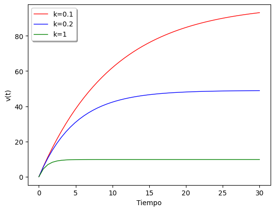
from sympy import symbols, Function, dsolve
# Símbolos
t, g, k , m, v0= symbols("t, g, k, m, v0")
# v es función del tiempo
v = Function('v')(t)
# Derivada de v
dvdt = v.diff(t)
# Ecuación diferencial
eq = dvdt - g + k*v/m
# Solución de la EDO con la condición inicial v(0)=v0
dsolve(eq, v, ics={v.subs(t, 0): v0})
---------------------------------------------------------------------------
ModuleNotFoundError Traceback (most recent call last)
Cell In[2], line 1
----> 1 from sympy import symbols, Function, dsolve
3 # Símbolos
4 t, g, k , m, v0= symbols("t, g, k, m, v0")
ModuleNotFoundError: No module named 'sympy'
import numpy as np
import matplotlib.pyplot as plt
from scipy.integrate import solve_ivp
# Parámetros de la ley de enfriamiento de Newton
k = -0.1 # Constante de enfriamiento
# Función que define la temperatura del medio variable en el tiempo
def T_m(t):
return 20 + 10 * np.sin(0.1 * t)
# Definición de la EDO para la ley de enfriamiento de Newton
def Newton(t, T):
return k * (T - T_m(t))
# Condición inicial
T0 = 100 # Temperatura inicial del objeto
# Intervalo de tiempo para la simulación
t_span = (0, 100)
t_eval = np.linspace(t_span[0], t_span[1], 1000)
# Resolver la EDO
sol = solve_ivp(Newton, t_span, [T0], t_eval=t_eval)
# Graficar los resultados
plt.plot(sol.t, sol.y[0], label='Temperatura del objeto')
plt.plot(sol.t, T_m(sol.t), label='Temperatura del medio', linestyle='dashed')
plt.xlabel('Tiempo')
plt.ylabel('Temperatura')
plt.legend()
plt.title('Ley de Enfriamiento de Newton con Temperatura del Medio Variable')
plt.show()
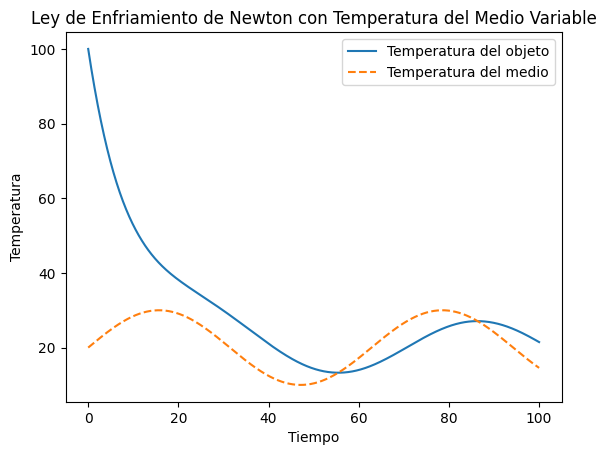
import numpy as np
import matplotlib.pyplot as plt
from scipy.integrate import odeint
# Parámetros de la ecuación
a = 1.0 # Tasa de crecimiento
b = 0.1 # Tasa de competencia
# Ecuación diferencial logística
def logistica_ec(P, t):
return a * P - b * P**2
# Tiempo para la integración
t = np.linspace(0, 10, 400)
# Condiciones iniciales diferentes
P0_vals = [0.1, 0.5, 2, 9, 10]
# Soluciones para cada condición inicial
sols = [odeint(logistica_ec, P0, t) for P0 in P0_vals]
# Graficar el las soluciones
plt.figure(figsize=(10, 6))
for i, P0 in enumerate(P0_vals):
plt.plot(t, sols[i], label=f'P(0) = {P0}')
plt.xlabel('Tiempo t')
plt.ylabel('Población P(t)')
plt.title('Soluciones de la Ecuación Logística')
plt.legend()
plt.grid(True)
plt.show()
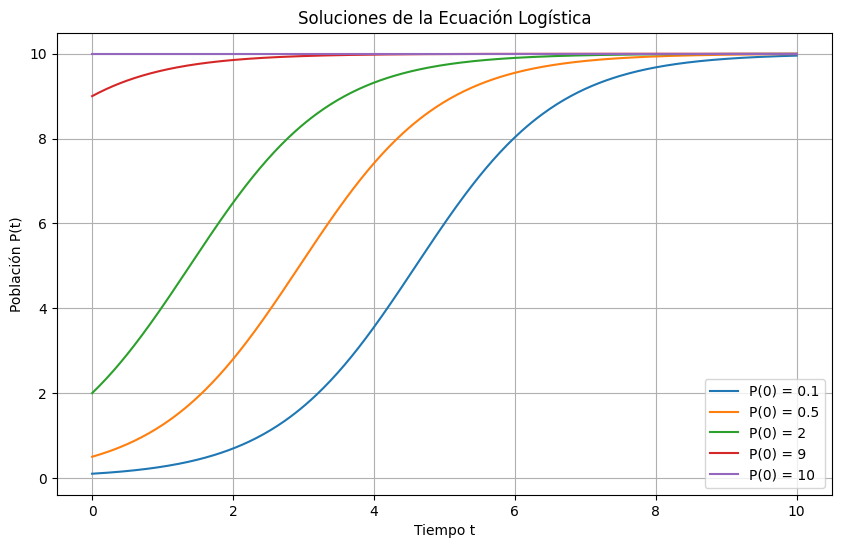
import numpy as np
import matplotlib.pyplot as plt
import ipywidgets as widgets
from ipywidgets import interactive
from scipy.integrate import solve_ivp
# Definición de la EDO
def f(x, y):
return np.sin(x)*np.cos(y)
# Definir la función para trazar el campo de pendientes y las soluciones.
def plot_slope_field(a=-5, b=5, c=-5, d=5, n=20, x0=0, y0=1):
x = np.linspace(a, b, n)
y = np.linspace(c, d, n)
X, Y = np.meshgrid(x, y)
U = 1
V = f(X, Y)
# Normalización de las flechas
N = np.sqrt(U**2 + V**2)
U2, V2 = U/N, V/N
plt.figure(figsize=(8, 6))
plt.quiver(X, Y, U2, V2, angles="xy")
plt.xlabel('x')
plt.ylabel('y')
plt.title('Campo de pendientes')
plt.xlim([a, b])
plt.ylim([c, d])
plt.grid()
# Resolución de la EDO con condición inicial en ambas direcciones.
def ode_system(t, y):
return f(t, y)
# Hacia adelante en el tiempo
t_span_forward = [x0, b]
t_eval_forward = np.linspace(x0, b, 100)
sol_forward = solve_ivp(ode_system, t_span_forward, [y0], t_eval=t_eval_forward)
# Hacia atrás en el tiempo
t_span_backward = [x0, a]
t_eval_backward = np.linspace(x0, a, 100)
sol_backward = solve_ivp(ode_system, t_span_backward, [y0], t_eval=t_eval_backward)
# Gráfico de la solución
plt.plot(sol_forward.t, sol_forward.y[0], 'r', label=f'Solución con CI: y({round(x0,2)})={round(y0,2)}')
plt.plot(sol_backward.t, sol_backward.y[0], 'r')
plt.scatter([x0], [y0], color='red') # Condición inicial
plt.legend()
plt.show()
# Widgets interactivos
a_slider = widgets.FloatSlider(value=-5, min=-10, max=0, step=0.1, description='a:')
b_slider = widgets.FloatSlider(value=5, min=0, max=10, step=0.1, description='b:')
c_slider = widgets.FloatSlider(value=-5, min=-10, max=0, step=0.1, description='c:')
d_slider = widgets.FloatSlider(value=5, min=0, max=10, step=0.1, description='d:')
n_slider = widgets.IntSlider(value=20, min=10, max=50, step=1, description='n:')
x0_slider = widgets.FloatSlider(value=0, min=-10, max=10, step=0.1, description='x0:')
y0_slider = widgets.FloatSlider(value=1, min=-10, max=10, step=0.1, description='y0:')
interactive_plot = interactive(plot_slope_field, a=a_slider, b=b_slider, c=c_slider, d=d_slider, n=n_slider, x0=x0_slider, y0=y0_slider)
output = interactive_plot.children[-1]
output.layout.height = '400px'
interactive_plot
import numpy as np
import matplotlib.pyplot as plt
from scipy.integrate import solve_ivp
# Definición de la EDO
def f(x, y):
return np.sin(x)*np.cos(y) #Se puede cambiar arbitrariamente
# Definir la función para trazar el campo de pendientes y las soluciones.
def plot_slope_field(a, b, c, d, n, x0, y0=1):
x = np.linspace(a, b, n)
y = np.linspace(c, d, n)
X, Y = np.meshgrid(x, y)
U = 1
V = f(X, Y)
# Normalización de las flechas
N = np.sqrt(U**2 + V**2)
U2, V2 = U/N, V/N
plt.figure(figsize=(8, 6))
plt.quiver(X, Y, U2, V2, angles="xy", color="b")
plt.xlabel('x')
plt.ylabel('y')
plt.title('Campo de pendientes')
plt.xlim([a, b])
plt.ylim([c, d])
plt.grid()
# Resolución de la EDO con condición inicial en ambas direcciones.
def ode_system(t, y):
return f(t, y)
# Hacia adelante en el tiempo
t_span_forward = [x0, b]
t_eval_forward = np.linspace(x0, b, 100)
sol_forward = solve_ivp(ode_system, t_span_forward, [y0], t_eval=t_eval_forward)
# Hacia atrás en el tiempo
t_span_backward = [x0, a]
t_eval_backward = np.linspace(x0, a, 100)
sol_backward = solve_ivp(ode_system, t_span_backward, [y0], t_eval=t_eval_backward)
# Gráfico de la solución
plt.plot(sol_forward.t, sol_forward.y[0], 'r', label=f'Solución con CI: y({round(x0,2)})={round(y0,2)}')
plt.plot(sol_backward.t, sol_backward.y[0], 'r')
plt.scatter([x0], [y0], color='red') # Condición inicial
plt.legend()
plt.show()
plot_slope_field(a=-5, b=5, c=-5, d=5, n=20, x0=2, y0=1)
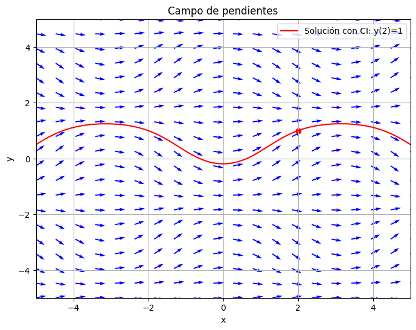
import numpy as np
import matplotlib.pyplot as plt
from scipy.integrate import solve_ivp
# Definimos la función f(x, y)
def f(x, y):
return 2 * np.sqrt(y)
# Condiciones iniciales
x0 = 2
y0 = 0
# Intervalo de integración
x_span = [x0, 5]
# Resolver la EDO usando solve_ivp
sol = solve_ivp(f, x_span, [y0], method='RK45', t_eval=np.linspace(x0, 5, 100))
# Solución analítica: y(x) = (x - 2)^2
x = np.linspace(2, 5, 100)
y_analitica = (x - 2)**2
# Solución trivial: y(x) = 0
y_trivial = np.zeros_like(x)
# Visualizar las soluciones
plt.plot(sol.t, sol.y[0], label='Solución numérica (solve_ivp)')
plt.plot(x, y_analitica, 'r--', label='Solución analítica: $(x-2)^2$')
plt.plot(x, y_trivial, 'g--', label='Solución trivial: $y(x) = 0$')
plt.xlabel('x')
plt.ylabel('y')
plt.title(r'Soluciones para $y\' = 2\sqrt{y}$ con $y(2) = 0$')
plt.legend()
plt.grid(True)
plt.show()
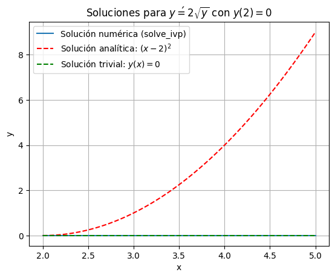
import numpy as np
import matplotlib.pyplot as plt
# Definimos la función f(x, y)
def f(x, y):
# Evitamos la división por cero para x = 0
return np.divide(y-1, x, out=np.zeros_like(x), where=x!=0)
# Condiciones iniciales
x0 = 0
y0 = 1
# Intervalo de integración
x = np.linspace(x0, 2, 100)
# Soluciones para diferentes valores de C
C_vals = [-1, 0, 1, 2]
sols = [1+C * x for C in C_vals]
# Visualizar las soluciones
for i, y_sol in enumerate(sols):
plt.plot(x, y_sol, label=f'Solución con C={C_vals[i]}')
plt.xlabel('x')
plt.ylabel('y')
plt.title('Infinitas soluciones para una única condición inicial')
plt.axhline(1, color='black', linestyle='--', label='y(0) = 1')
plt.legend()
plt.grid(True)
plt.show()
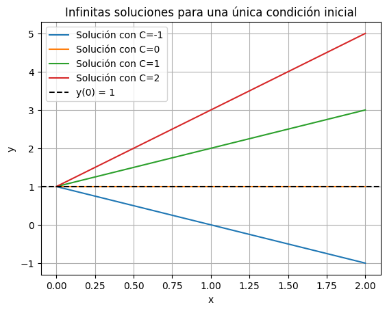
import numpy as np
import matplotlib.pyplot as plt
from scipy.integrate import solve_ivp
# Parámetros
# Cantidad total a memorizar
M = 1
# Valor fijo de la constante de proporcionalidad
k = 1
# Diferentes condiciones iniciales
A0_values = [0*M, 0.25*M, 0.5*M, 2*M]
# Definición de la ecuación diferencial
def dA_dt(t, A, k):
return k*(M-A)
# Tiempo de integración
t_eval = np.linspace(0, 10, 300)
# Resolver y graficar para diferentes condiciones iniciales
plt.figure(figsize=(10, 6))
for A0 in A0_values:
sol = solve_ivp(dA_dt, [0, 10], [A0], args=(k,), t_eval=t_eval)
plt.plot(sol.t, sol.y[0], label=f'A(0) = {A0/M}M')
# Configuración del gráfico
plt.title('Memorización a lo largo del tiempo con diferentes condiciones iniciales')
plt.xlabel('Tiempo t')
plt.ylabel('Cantidad memorizada A(t)')
plt.legend()
plt.grid(True)
plt.show()
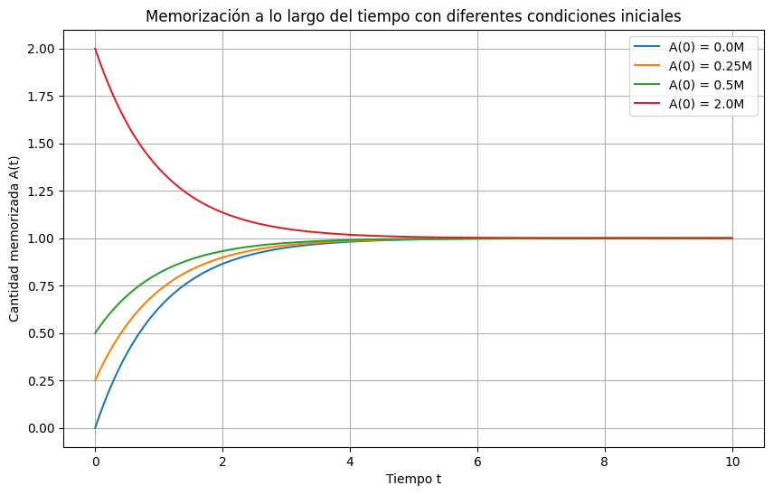
import numpy as np
import matplotlib.pyplot as plt
from scipy.integrate import solve_ivp
# Parámetros del sistema
m = 1.0 # masa
k = 1.0 # constante del resorte
beta = 0.5 # coeficiente de amortiguamiento
F0 = 1 # amplitud de la fuerza externa (puede ser 0 si no hay fuerza externa)
gamma = 1.0 # frecuencia de la fuerza externa
# Definir el sistema de ecuaciones diferenciales: Una EDO de 2do orden se "separa" como un sistema para aplicar el
#el comando solve_ivp
def masa_resorte(t, y, m, k, beta, F0, gamma):
x, v = y
dxdt = v
dvdt = -(k/m) * x - (beta/m) * v + (F0/m) * np.cos(gamma * t) #Fuerza externa F0*cos(gamma*t): se puede cambiar
return [dxdt, dvdt]
# Condiciones iniciales
y0 = [1.0, 0.0] # posición inicial x(0)=1, velocidad inicial x'(0)=0
# Tiempo de simulación
t_span = (0, 30)
t_eval = np.linspace(*t_span, 500)
# Resolver las ecuaciones diferenciales para los tres casos
sol_libre_sin_amort = solve_ivp(masa_resorte, t_span, y0, args=(m, k, 0, 0, 0), t_eval=t_eval)
sol_libre_amort = solve_ivp(masa_resorte, t_span, y0, args=(m, k, beta, 0, 0), t_eval=t_eval)
sol_forzado = solve_ivp(masa_resorte, t_span, y0, args=(m, k, beta, F0, gamma), t_eval=t_eval)
# Graficar los resultados en un mismo gráfico
plt.figure(figsize=(10, 6))
plt.plot(sol_libre_sin_amort.t, sol_libre_sin_amort.y[0], label='Movimiento libre sin amortiguación', color='green')
plt.plot(sol_libre_amort.t, sol_libre_amort.y[0], label='Movimiento libre amortiguado', color='blue')
plt.plot(sol_forzado.t, sol_forzado.y[0], label='Movimiento forzado', linestyle='dashed', color='red')
plt.title('Comparación de los Movimientos: Libre, Amortiguado y Forzado')
plt.xlabel('Tiempo (t)')
plt.ylabel('Posición (x)')
plt.legend()
plt.grid(True)
plt.tight_layout()
plt.show()
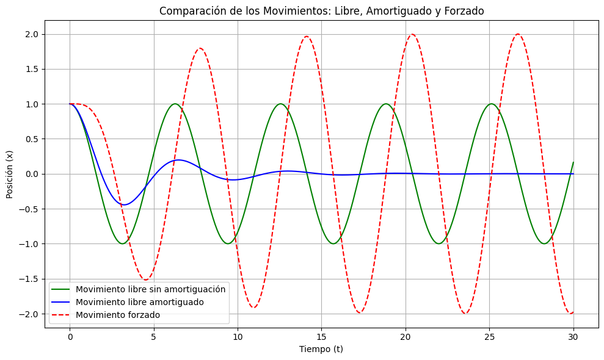
import sympy as sp
# Definir la variable independiente y la función dependiente
t = sp.Symbol('t')
y = sp.Function('y')(t)
# Definir la ecuación diferencial no homogénea
edo_no_homogenea = sp.Eq(2*y.diff(t, 2) - 3*y.diff(t) + 4*y, 0)
# Resolver la ecuación diferencial no homogénea
solucion_no_homogenea = sp.dsolve(edo_no_homogenea)
# # Mostrar la solución general
print("Solución de la EDO no homogénea:")
display(solucion_no_homogenea)
Solución de la EDO no homogénea:
\[\displaystyle y{\left(t \right)} = \left(C_{1} \sin{\left(\frac{\sqrt{23} t}{4} \right)} + C_{2} \cos{\left(\frac{\sqrt{23} t}{4} \right)}\right) e^{\frac{3 t}{4}}\]
import numpy as np
import matplotlib.pyplot as plt
from scipy.integrate import solve_ivp
# Parámetros del sistema
m = 1.0 # masa (kg)
k = 1.0 # constante del resorte (N/m)
beta = 0 # coeficiente de amortiguamiento (kg/s)
F0 = 1.0 # amplitud de la fuerza externa (N)
gamma = 1.0 # frecuencia de la fuerza externa (rad/s)
# Frecuencia natural del sistema
omega = np.sqrt(k / m)
# Definimos el sistema de ecuaciones diferenciales
def sistema_masa_resorte(t, y):
x, v = y # y = [x, v], donde x es la posición y v la velocidad
dxdt = v
dvdt = (F0 * np.cos(gamma * t) - beta * v - k * x) / m
return [dxdt, dvdt]
# Condiciones iniciales
x0 = 0.0 # Posición inicial (m)
v0 = 0.0 # Velocidad inicial (m/s)
y0 = [x0, v0]
# Tiempo de simulación
t_span = (0, 100) # Tiempo desde 0 hasta 100 segundos
t_eval = np.linspace(t_span[0], t_span[1], 1000) # Puntos de evaluación
# Resolver la EDO
sol = solve_ivp(sistema_masa_resorte, t_span, y0, t_eval=t_eval)
# Extraer la solución
t = sol.t
x = sol.y[0] # Posición de la masa
# Graficar la posición en función del tiempo
plt.figure(figsize=(10, 6))
plt.plot(t, x, label='Posición $x(t)$', color='r')
plt.axhline(0, color='k',linewidth=0.5)
plt.title('Fenómeno de resonancia en el sistema masa-resorte')
plt.xlabel('Tiempo (s)')
plt.ylabel('Posición (m)')
plt.grid(True)
plt.legend()
plt.show()
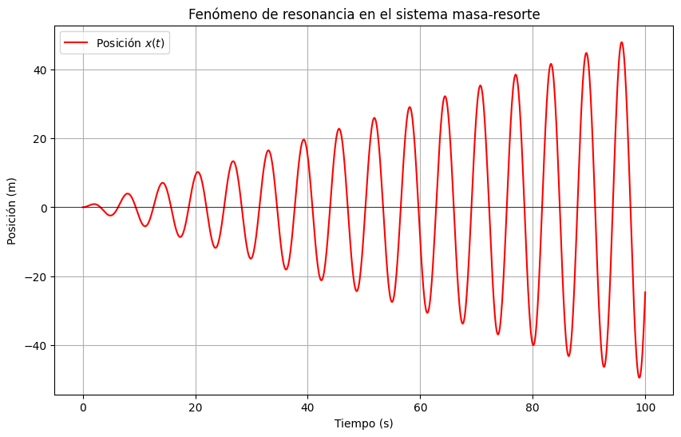
from sympy import symbols, diff, exp
# Definir la variable independiente y las funciones
x = symbols('x')
y1 = exp(x)
y2 = x* exp(x)
# Definir la ecuación diferencial
def check_solucion(y):
# Derivadas
y_primera = diff(y, x)
y_segunda = diff(y_primera, x)
# Sustituir en la ecuación diferencial y'' - 2y' + y = 0
return y_segunda - 2*y_primera + y
# Modificar la función para que devuelva una respuesta clara
def check_solucion_verbal(y, label):
result = check_solucion(y)
if result == 0:
return f"{label} es solución."
else:
return f"{label} no es solución."
# Verificar si y1 y y2 son soluciones
check_y1_verbal = check_solucion_verbal(y1, "y1(x) = e^x")
check_y2_verbal = check_solucion_verbal(y2, "y2(x) = xe^x")
check_y1_verbal, check_y2_verbal
('y1(x) = e^x es solución.', 'y2(x) = xe^x es solución.')
import sympy as sp
# Definir la variable simbólica
x = sp.symbols('x')
# Definir las funciones
f1 = sp.sin(2*x)
f2 = sp.sin(x)*sp.cos(x)
# Calcular las derivadas
f1_deriv = sp.diff(f1, x)
f2_deriv = sp.diff(f2, x)
# Crear la matriz de Wronskiano
wronskiano = sp.Matrix([[f1, f2], [f1_deriv, f2_deriv]])
# Calcular el determinante del Wronskiano
det_wronskiano = wronskiano.det()
# Simplificar el determinante
det_simplificado = sp.simplify(det_wronskiano)
# Mostrar el resultado
f"El wronskiano es {det_simplificado}"
'El wronskiano es 0'
import sympy as sp
# Definimos la variable independiente
x = sp.symbols('x')
# Definimos P(x) y y1(x)
P = -(x+2)/x
y1 = x
# Calculamos y2(x) con la fórmula de Abel
exp_integral = sp.exp(-sp.integrate(P, x)) # e^(-∫P(x)dx)
integral = sp.integrate(exp_integral / y1**2, x) # ∫(e^(-∫P(x)dx) / y1^2)dx
y2 = y1 * integral # y2(x)
# Simplificamos el resultado
y2_simple = sp.simplify(y2)
# Mostrar el resultado
y2_simple
import sympy as sp
# Activar impresión bonita
sp.init_printing()
# Definir las variables y la función dependiente
x = sp.symbols('x')
y = sp.Function('y')(x)
# Definir la ecuación diferencial
eq = sp.Eq(y.diff(x, 2) + 2*y.diff(x) + y, sp.exp(-x) * sp.ln(x))
# Resolver la ecuación homogénea asociada
eq_homogenea = sp.Eq(y.diff(x, 2) + 2*y.diff(x) + y, 0)
sol_homogenea = sp.dsolve(eq_homogenea, y)
# Imprimir la solución homogénea
print("Solución homogénea:")
display(sol_homogenea)
# Resolver la ecuación completa
sol_completa = sp.dsolve(eq, y)
# Separar la solución homogénea de la particular
sol_particular = sp.simplify(sol_completa.rhs - sol_homogenea.rhs)
# Mostrar la solución particular y completa
print("\nSolución particular:")
display(sol_particular)
print("\nSolución general (completa):")
display(sol_completa)
Solución homogénea:
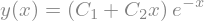
Solución particular:
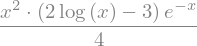
Solución general (completa):
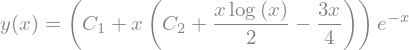
import numpy as np
from sympy import Matrix, Rational, symbols, exp, simplify
import sympy as sp
# Activar impresión bonita
sp.init_printing()
# Definir la matriz A usando fracciones exactas ## SE PUEDE MODIFICAR
A = Matrix([[Rational(-2, 25), Rational(1, 50)],
[Rational(2, 25), Rational(-2, 25)]])
# Calcular los vectores y valores propios con fracciones
val_propios = A.eigenvals() # Valores propios
vec_propios = A.eigenvects() # Vectores propios
# Extraer los valores y vectores propios en listas asegurando el orden correcto
val_propios_lista = []
vectores_propios_lista = []
for val_propios, mult, vectores in vec_propios:
val_propios_lista.append(val_propios)
vectores_propios_lista.append(vectores[0]) # Cada valor propio puede tener múltiples vectores asociados, elegimos el primero
# Asignar los vectores propios en el orden de los valores propios
v1 = vectores_propios_lista[0] # Primer vector propio
v2 = vectores_propios_lista[1] # Segundo vector propio
# Condiciones iniciales ## SE PUEDE MODIFICAR
x0 = Matrix([25, 0])
# Resolver para las constantes c1 y c2 usando SymPy
C = Matrix([[v1[0], v2[0]],
[v1[1], v2[1]]]).inv() * x0
# Expresiones de x1(t) y x2(t)
t = symbols('t')
def x1(t):
return simplify(C[0] * v1[0] * exp(val_propios_lista[0] * t) + C[1] * v2[0] * exp(val_propios_lista[1] * t))
def x2(t):
return simplify(C[0] * v1[1] * exp(val_propios_lista[0] * t) + C[1] * v2[1] * exp(val_propios_lista[1] * t))
# Expresión general para x1(t) y x2(t) en formato más legible
x1_exp = x1(t)
x2_exp = x2(t)
# Imprimir las expresiones en un formato más adecuado
print("Solución x1(t) y x2(t):")
display(x1_exp)
display(x2_exp)
Solución x1(t) y x2(t):
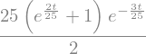
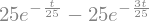
import numpy as np
import matplotlib.pyplot as plt
from scipy.integrate import odeint
# Definir la matriz del sistema
A = np.array([[-2/25, 1/50],
[2/25, -2/25]])
# Calcular los valores propios y vectores propios
eigenvalues, eigenvectors = np.linalg.eig(A)
# Crear un grid de puntos
x = np.linspace(-30, 30, 10)
y = np.linspace(-30, 30, 10)
X, Y = np.meshgrid(x, y)
# Definir las ecuaciones diferenciales del sistema
U = (-2/25) * X + (1/50) * Y
V = (2/25) * X + (-2/25) * Y
# Configurar la gráfica del plano de fase
plt.figure(figsize=(8, 8))
plt.streamplot(X, Y, U, V, color='b') # Graficar el campo vectorial
# Condiciones iniciales para diferentes trayectorias
initial_conditions = [(5, 25), (30, 30), (25, 0), (10, 30), (20, 20), (10, 10)]
t = np.linspace(0, 10, 200)
# Definimos el sistema de ecuaciones diferenciales
def system(X, t):
x, y = X
dxdt = (-2/25)*x + (1/50)*y
dydt = (2/25)*x + (-2/25)*y
return [dxdt, dydt]
# Graficamos las trayectorias continuas
for ic in initial_conditions:
traj = odeint(system, ic, t)
plt.plot(traj[:, 0], traj[:, 1], lw=2)
# Graficar los ejes formados por los vectores propios. Se multiplica por +-40 para mejor visualización
for eigenvector in eigenvectors.T:
plt.plot([-40*eigenvector[0], 40*eigenvector[0]],
[-40*eigenvector[1], 40*eigenvector[1]], 'r--', lw=2)
# Añadir detalles a la gráfica
plt.xlim([0, 30])
plt.ylim([0, 30])
plt.axhline(0, color='black',linewidth=1)
plt.axvline(0, color='black',linewidth=1)
plt.title('Plano de Fase del Sistema')
plt.xlabel('x')
plt.ylabel('y')
plt.grid(True)
plt.show()
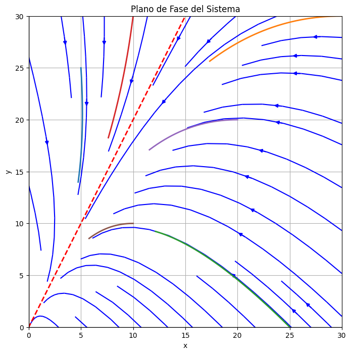
from sympy import Matrix, Rational
import sympy as sp
# Activar impresión bonita
sp.init_printing()
# Definir la matriz A usando fracciones exactas ## SE PUEDE MODIFICAR
A = Matrix([[Rational(3,1), Rational(-18,1)],
[Rational(2, 1), Rational(-9, 1)]])
# Calcular los vectores y valores propios con fracciones
val_propios = A.eigenvals() # Valores propios
vec_propios = A.eigenvects() # Vectores propios
vec_propios #El output tiene el siguiente orden: valor propio, multiplicidad, vector propio
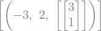
import numpy as np
import pylab as plt
# Definimos el sistema de ecuaciones diferenciales
def system(X, t):
x, y = X
dxdt = 3*x -18*y
dydt = 2*x -9*y
return [dxdt, dydt]
# Definimos el espacio de puntos para las condiciones iniciales
x_vals = np.linspace(-20, 20, 20)
y_vals = np.linspace(-20, 20, 20)
# Creamos una malla de puntos
X, Y = np.meshgrid(x_vals, y_vals)
# Calculamos las derivadas para cada punto de la malla
u = 3*X -18*Y
v = 2*X -9*Y
# Graficamos el campo vectorial usando streamplot
plt.figure(figsize=(8, 8))
plt.streamplot(X, Y, u, v, color='b', linewidth=1)
# Etiquetas de los ejes
plt.xlabel('$x$')
plt.ylabel('$y$')
plt.title('Plano de Fase')
# Ajustamos los límites del gráfico
plt.xlim([-20, 20])
plt.ylim([-20, 20])
# Mostramos el gráfico
plt.grid()
plt.show()
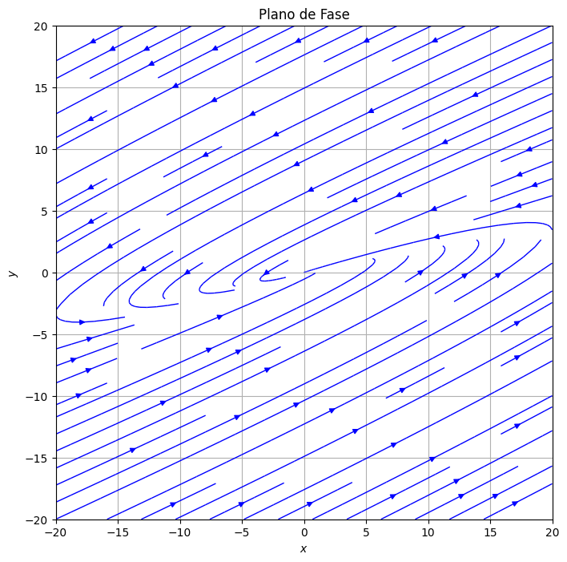
import numpy as np
import pylab as plt
# Definimos el sistema de ecuaciones diferenciales
def system(X, t):
x, y = X
dxdt = 2*x +8*y
dydt = -1*x -2*y
return [dxdt, dydt]
# Definimos el espacio de puntos para las condiciones iniciales
x_vals = np.linspace(-20, 20, 20)
y_vals = np.linspace(-20, 20, 20)
# Creamos una malla de puntos
X, Y = np.meshgrid(x_vals, y_vals)
# Calculamos las derivadas para cada punto de la malla
u = 2*X +8*Y
v = -1*X -2*Y
# Graficamos el campo vectorial usando streamplot
plt.figure(figsize=(8, 8))
plt.streamplot(X, Y, u, v, color='b', linewidth=1)
# Etiquetas de los ejes
plt.xlabel('$x$')
plt.ylabel('$y$')
plt.title('Plano de Fase')
# Ajustamos los límites del gráfico
plt.xlim([-20, 20])
plt.ylim([-20, 20])
# Mostramos el gráfico
plt.grid()
plt.show()
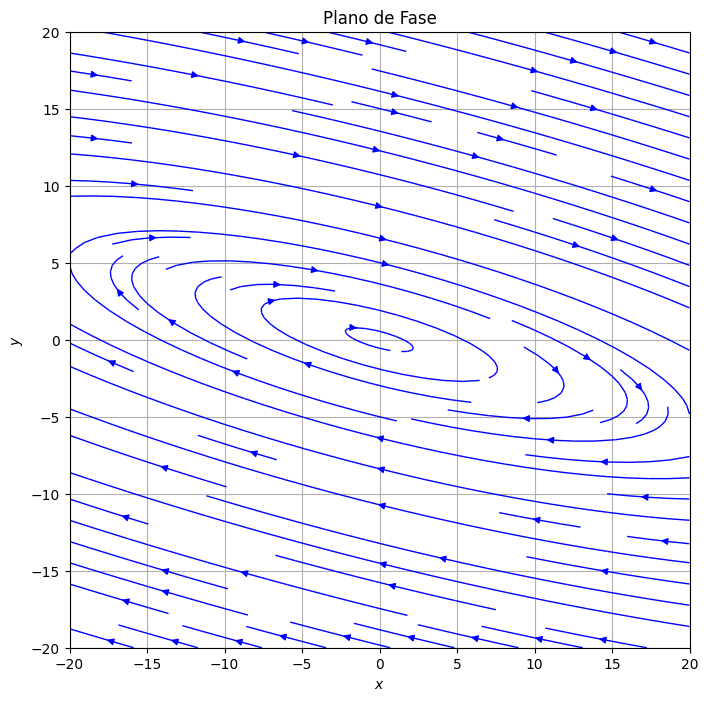
from sympy import symbols, Eq, solve
# Definimos las variables simbólicas
x, y = symbols('x y')
# Definimos las ecuaciones del sistema
eq1 = Eq(-(x - y) * (1 - x - y), 0) # x' = 0
eq2 = Eq(x * (2 + y), 0) # y' = 0
# Resolvemos el sistema de ecuaciones
puntos_criticos = solve([eq1, eq2], (x, y))
puntos_criticos
[(-2, -2), (0, 0), (0, 1), (3, -2)]
import numpy as np
import matplotlib.pyplot as plt
# Definimos las funciones del sistema de ecuaciones diferenciales
def dx_dt(x, y):
return -(x - y) * (1 - x - y)
def dy_dt(x, y):
return x * (2 + y)
# Definimos el rango de valores para x e y
x_values = np.linspace(-5, 5, 20)
y_values = np.linspace(-5, 5, 20)
# Creamos una malla de puntos
X, Y = np.meshgrid(x_values, y_values)
# Calculamos los valores del campo vectorial
U = dx_dt(X, Y)
V = dy_dt(X, Y)
# Graficamos el plano de fase
plt.figure(figsize=(8, 8))
plt.streamplot(X, Y, U, V, color='b')
plt.title("Retrato de fase del sistema")
plt.xlabel('x')
plt.ylabel('y')
plt.axhline(0, color='black',linewidth=0.5)
plt.axvline(0, color='black',linewidth=0.5)
plt.grid(True)
plt.show()
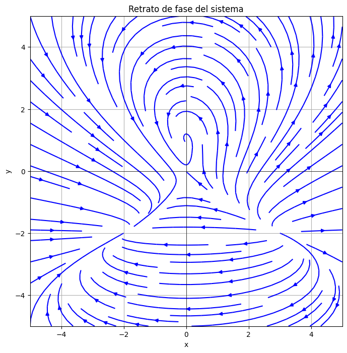
import sympy as sp
# Definir la variable simbólica 't' (tiempo) y 's' (frecuencia en el dominio de Laplace), a constante
t, s, a= sp.symbols('t s a')
# Definir algunas funciones simbólicas en el tiempo
f1 = sp.exp(a*t) # Función exponencial
# Calcular las transformadas de Laplace
laplace_f1 = sp.laplace_transform(f1, t, s)
# Mostrar los resultados
print(f"Transformada de Laplace de exp(at): {laplace_f1[0]}")
Transformada de Laplace de exp(at): 1/(-a + s)
from sympy import *
from sympy.printing.latex import LatexPrinter
class MyLatexPrinter(LatexPrinter):
def _print_Heaviside(self, expr, exp=None):
pargs = ', '.join(self._print(arg) for arg in expr.pargs)
tex = r"u\left(%s\right)" % pargs
if exp:
tex = r"\left(%s\right)^{%s}" % (tex, exp)
return tex
def my_latex(expr, **settings):
return MyLatexPrinter(settings).doprint(expr)
init_printing(latex_printer=my_latex)
var("s, t",positive=True)
expr = 1 / s**8
inv_lap = inverse_laplace_transform(expr, s, t)
display(inv_lap)
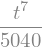
import numpy as np
import matplotlib.pyplot as plt
from scipy.integrate import odeint
def laplace_solution(t):
return np.sqrt(2) * (np.sin(t) - np.sin(np.sqrt(2)*t)) / (2 - np.sqrt(2))
# Generar puntos para graficar
t = np.linspace(0, 20, 1000)
# Calcular solución
y_laplace = laplace_solution(t)
# Graficar resultados
plt.figure(figsize=(12, 6))
plt.plot(t, y_laplace, label='Solución por Laplace')
plt.xlabel('t')
plt.ylabel('y')
plt.title("Solución de y'' + y = √2 sen(√2t), y(0) = y'(0) = 0")
plt.legend()
plt.grid(True)
plt.show()
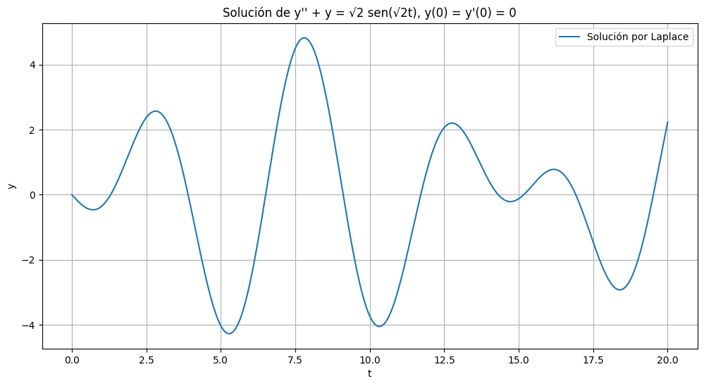
import sympy as sp
# Definir las variables simbólicas (t como positiva)
s = sp.symbols('s')
t = sp.symbols('t', positive=True)
Y = sp.Function('Y')(s)
# Definir la transformada de Laplace de y''
L_y_double_prime = s**2 * Y - s * sp.sympify(0) - sp.sympify(0)
# Definir la transformada de Laplace de y
L_y = Y
# Definir la transformada de Laplace de √2*sin(√2*t)
L_f = sp.sqrt(2) * (sp.sqrt(2) / (s**2 + 2))
# Formar la ecuación en el dominio de Laplace
laplace_eq = L_y_double_prime + L_y - L_f
# Resolver para Y
Y_solved = sp.solve(laplace_eq, Y)[0]
# Aplicar la transformada inversa de Laplace
y = sp.inverse_laplace_transform(Y_solved, s, t)
# Simplificar la solución
y_simplified = sp.simplify(y)
print("La solución explícita es:")
sp.pprint(y_simplified)
La solución explícita es:
2⋅sin(t) - √2⋅sin(√2⋅t)
import sympy as sp
# Definir la variable simbólica
t, tau = sp.symbols('t tau')
# Definir las funciones f(tau) y g(t - tau)
f_tau = sp.exp(tau) # f(tau) = exp(tau) para tau >= 0
g_t_tau = (t - tau)**2 # g(t - tau) = (t - tau)**2 para t - tau >= 0
# Definir la convolución explícita
convolucion_integral = sp.integrate(f_tau * g_t_tau, (tau, 0, t))
# Simplificar la expresión resultante
convolucion = sp.simplify(convolucion_integral)
# Mostrar la solución explícita de la convolución
print("La convolución es:")
sp.pprint(convolucion)
La convolución es:
2 t
- t - 2⋅t + 2⋅ℯ - 2
import sympy as sp
import numpy as np
import matplotlib.pyplot as plt
from sympy.abc import t, s
# Definir variables simbólicas
t = sp.Symbol('t', real=True)
s = sp.Symbol('s')
# Definir las condiciones iniciales
x0 = 1 # x(0)
v0 = 0 # x'(0)
# La transformada de Laplace de la delta de Dirac desplazada δ(t-a) es e^(-as)
a = sp.pi/2 # El desplazamiento de la delta
L_delta = sp.exp(-a*s) # Transformada de la delta desplazada
# Aplicar la transformada de Laplace a la ecuación. Este cálculo es manual
# L{x''} + L{x} = 3L{δ(t-π/2)}
# s²X(s) - sx(0) - x'(0) + X(s) = 3e^(-πs/2)
# (s² + 1)X(s) = sx₀ + v₀ + 3e^(-πs/2)
# X(s) = (sx₀ + v₀ + 3e^(-πs/2))/(s² + 1)
X_s = (s*x0 + v0 + 3*L_delta)/(s**2 + 1)
# Calcular la transformada inversa
x_t = sp.inverse_laplace_transform(X_s, s, t)
# Simplificar la expresión
x_t = sp.simplify(x_t)
# Convertir la solución simbólica a una función numérica para graficar
x_t_lambda = sp.lambdify(t, x_t, modules=['numpy'])
# Crear puntos para graficar
t_vals = np.linspace(0, 4*np.pi, 1000)
x_vals = x_t_lambda(t_vals)
# Graficar la solución
plt.figure(figsize=(12, 6))
plt.plot(t_vals, x_vals)
plt.grid(True)
plt.xlabel('Tiempo t')
plt.ylabel('Posición x(t)')
plt.title('Solución de x\'\' + x = 3δ(t-π/2), x(0)=1, x\'(0)=0')
plt.axvline(x=np.pi/2, color='r', linestyle='--', alpha=0.3, label='t=π/2')
plt.axhline(y=0, color='k', linestyle='-', alpha=0.3)
plt.legend()
# Imprimir la solución simbólica
print("La solución simbólica es:")
print(x_t)
plt.show()
La solución simbólica es:
(Heaviside(t) - 3*Heaviside(t - pi/2))*cos(t)
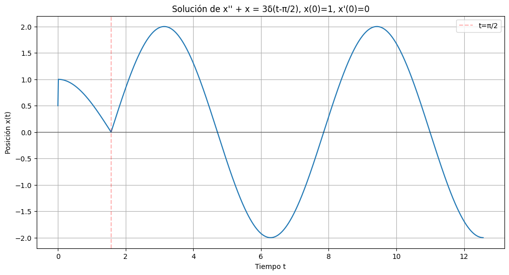
import sympy as sp
sp.interactive.printing.init_printing(use_latex='mathjax', order='old')
x = sp.symbols('x')
def serie_EDO(N,a,b,c):
# N = Número de términos de la serie
# a = Coeficiente de y''
# b = Coeficiente de y'
# c = Coeficiente de y
# Observación: En caso de ingresar una fraccion numérica realizarlo de la
# forma: sp.Rational(p,q) donde p=numerador y q=denominador.
'''Función que calcula N términos de la serie de potencias centrada en 0,
asociada a la expresión ay''+by'+cy, donde a,b,c son funciones que
dependen de x.'''
coef = sp.symbols('c0:' + str(2 * N))
y = sum([coef[i] * x**i for i in range(2 * N)])
expr = sp.expand(a * sp.diff(y,x,2) + b * sp.diff(y,x) + c * y)
co = [expr.coeff(x,i) for i in range(N)]
serie = sum([co[i] * x**i for i in range(N)])
return serie
serie_EDO(10,x**2+1,x,-1)
\[\displaystyle - c_{0} + 2 c_{2} + x^{2} \cdot \left(3 c_{2} + 12 c_{4}\right) + x^{3} \cdot \left(8 c_{3} + 20 c_{5}\right) + x^{4} \cdot \left(15 c_{4} + 30 c_{6}\right) + x^{5} \cdot \left(24 c_{5} + 42 c_{7}\right) + x^{6} \cdot \left(35 c_{6} + 56 c_{8}\right) + x^{7} \cdot \left(48 c_{7} + 72 c_{9}\right) + x^{8} \cdot \left(63 c_{8} + 90 c_{10}\right) + x^{9} \cdot \left(80 c_{9} + 110 c_{11}\right) + 6 c_{3} x\]
# Importar módulos necesarios
import sympy as sp
import numpy as np
import matplotlib.pyplot as plt
# Definir variables simbólicas
t = sp.Symbol('t', real = True)
s = sp.Symbol('s')
# Definir función x y sus derivadas
x = sp.Function('x')(t)
dx_dt = x.diff(t)
dx2_dt = dx_dt.diff(t)
# Definir función F que reemplaza a la transformada de Laplace
F = sp.Function('F')(s)
##################################################
# EDITAR AQUÍ #
#####################
# Definir el/los desplazamiento(s) de la(s) delta(s)
a = [sp.pi/2]
# Definir la EDO
EDO = sp.Eq(dx2_dt + x, 3*sp.DiracDelta(t - a[0]))
# Definir las condiciones del PVI
x_0 = 1
dx_0 = 0
# Definir intervalo de t para graficar
Valores_t = np.linspace(0, 4*np.pi, 1000)
##################################################
# Definir las ecuaciones para mostrar las condiciones del PVI
x_t_0 = sp.Eq(x.subs(t, 0), x_0)
dx_t_0 = sp.Eq(sp.Symbol("x'(0)"), dx_0)
# Imprimir la EDO a resolver
print('EDO a resolver:')
display(EDO)
print('Con PVI:')
display(x_t_0)
display(dx_t_0)
# Aplicar la transformada de Laplace a la ecuación
# usa directamente la transformada sin intentar acceder al índice
lhs_transform = sp.laplace_transform(EDO.lhs, t, s)
rhs_transform = sp.laplace_transform(EDO.rhs, t, s)
if isinstance(lhs_transform, tuple):
lhs_transform = lhs_transform[0]
if isinstance(rhs_transform, tuple):
rhs_transform = rhs_transform[0]
Ecuacion_Laplace = sp.Eq(lhs_transform, rhs_transform)
# Imprimir expresión de la ecuación con transformada de Laplace
print('\n\nEcuación después de aplicar la transformada de Laplace sin aplicar las condiciones del PVI:')
display(Ecuacion_Laplace)
# Aplicar los valores del PVI a la ecuación
Ecuacion_Laplace_PVI = Ecuacion_Laplace.subs({
sp.LaplaceTransform(x, t, s): F,
x.subs(t, 0): x_0,
dx_dt.subs(t, 0): dx_0})
# Imprimir la ecuación con transformada de Laplace considerando las condiciones del PVI
print('Ecuación después de aplicar la transformada de Laplace aplicando las condiciones PVI:')
display(Ecuacion_Laplace_PVI.subs({F: sp.LaplaceTransform(x, t, s)}))
# Resolver por la transformada de Laplace
Solucion_Laplace = sp.solve(Ecuacion_Laplace_PVI, F)[0]
# Imprimir la ecuación de la transformada de Laplace
print('Transformada de Laplace:')
display(sp.Eq(sp.LaplaceTransform(x, t, s), Solucion_Laplace.simplify()))
# Calcular la transformada inversa y simplificar la expresión
Solucion = sp.inverse_laplace_transform(Solucion_Laplace, s, t).doit().simplify()
# Imprimir la solución simbólica
print('\n\nLa solución simbólica es:')
display(sp.Eq(x, Solucion))
# Convertir la solución simbólica a una función numérica para graficar
x_Lambda = sp.lambdify(t, Solucion, modules = ['numpy'])
# Crear puntos para graficar
Valores_x = x_Lambda(Valores_t)
# Graficar la solución
plt.figure(1, (12, 6))
plt.clf()
plt.plot(Valores_t, Valores_x)
plt.grid(True)
plt.title(f'Solución de ${sp.latex(EDO)}$, con PVI: ${sp.latex(x_t_0)}$, ${sp.latex(dx_t_0)}$')
plt.xlabel('Tiempo $t$')
plt.ylabel('Posición $x(t)$')
[plt.axvline(_a, color = 'r', linestyle = '--', alpha = 0.3, label = f'$t={sp.latex(_a)}$') for _a in a]
plt.axhline(0, color = 'k', linestyle = '-', alpha = 0.3)
plt.legend()
plt.show()
### Gracias a Alonso Tamayo por su amable colaboración.
EDO a resolver:
\[\displaystyle x{\left(t \right)} + \frac{d^{2}}{d t^{2}} x{\left(t \right)} = 3 \delta\left(t - \frac{\pi}{2}\right)\]
Con PVI:
\[\displaystyle x{\left(0 \right)} = 1\]
\[\displaystyle x'(0) = 0\]
Ecuación después de aplicar la transformada de Laplace sin aplicar las condiciones del PVI:
\[\displaystyle s^{2} \mathcal{L}_{t}\left[x{\left(t \right)}\right]\left(s\right) - s x{\left(0 \right)} + \mathcal{L}_{t}\left[x{\left(t \right)}\right]\left(s\right) - \left. \frac{d}{d t} x{\left(t \right)} \right|_{\substack{ t=0 }} = 3 e^{- \frac{\pi s}{2}}\]
Ecuación después de aplicar la transformada de Laplace aplicando las condiciones PVI:
\[\displaystyle s^{2} \mathcal{L}_{t}\left[x{\left(t \right)}\right]\left(s\right) - s + \mathcal{L}_{t}\left[x{\left(t \right)}\right]\left(s\right) = 3 e^{- \frac{\pi s}{2}}\]
Transformada de Laplace:
\[\displaystyle \mathcal{L}_{t}\left[x{\left(t \right)}\right]\left(s\right) = \frac{\left(s e^{\frac{\pi s}{2}} + 3\right) e^{- \frac{\pi s}{2}}}{s^{2} + 1}\]
La solución simbólica es:
\[\displaystyle x{\left(t \right)} = \left(\theta\left(t\right) - 3 \theta\left(t - \frac{\pi}{2}\right)\right) \cos{\left(t \right)}\]
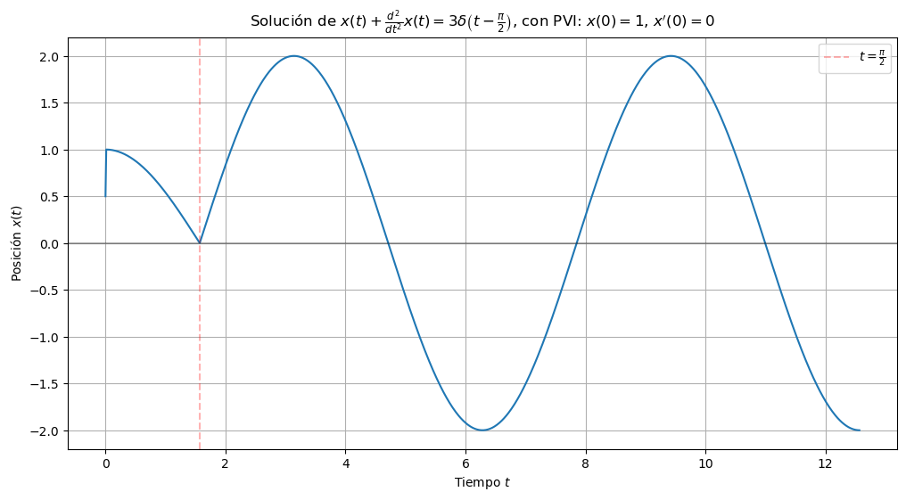
import sympy as sp
# Definimos los símbolos y parámetros
x = sp.symbols('x')
sp.interactive.printing.init_printing(use_latex='mathjax', order='old')
# Función para calcular la solución en términos de solo c0 y c1
def calcular_solucion_en_terminos_de_c0_c1(N, a, b, c):
# Definimos los coeficientes de la serie de potencias
coef = sp.symbols('c0:' + str(2 * N))
y = sum([coef[i] * x**i for i in range(2 * N)])
# Expandimos la expresión de la EDO
expr = sp.expand(a * sp.diff(y, x, 2) + b * sp.diff(y, x) + c * y)
# Obtenemos los coeficientes de x^i
co = [expr.coeff(x, i) for i in range(N)]
# Calculamos la relación de recurrencia
relacion_recurrencia = []
for i in range(len(co)):
# Resolviendo cada ecuación en función de coeficientes c_i
eq = sp.Eq(co[i], 0)
solucion = sp.solve(eq, coef[i + 2]) # Relación en términos de coeficientes previos
relacion_recurrencia.append((coef[i + 2], solucion[0]) if solucion else (coef[i + 2], 0))
# Expresamos los coeficientes solo en función de c0 y c1
c0, c1 = sp.symbols('c0 c1')
coef_valores = {coef[0]: c0, coef[1]: c1}
for i, (ci, valor) in enumerate(relacion_recurrencia):
if valor != 0:
# Sustituimos cada coeficiente en términos de c0 y c1
coef_valores[ci] = valor.subs(coef_valores)
else:
coef_valores[ci] = 0
# Construimos la solución en términos de c0 y c1
y_solucion = sum(coef_valores[coef[i]] * x**i for i in range(N))
return relacion_recurrencia, y_solucion.simplify()
# Ejecutamos el cálculo con N=10, a=1, b=0, c=x ### Acá se introducen los parámetros
relacion_recurrencia, y_solucion = calcular_solucion_en_terminos_de_c0_c1(10, 1, 0, x)
y_solucion
\[\displaystyle c_{0} + c_{1} x - \frac{c_{0} x^{3}}{6} - \frac{c_{1} x^{4}}{12} + \frac{c_{0} x^{6}}{180} + \frac{c_{1} x^{7}}{504} - \frac{c_{0} x^{9}}{12960}\]
import sympy as sp
sp.interactive.printing.init_printing(use_latex='mathjax', order='old')
x = sp.symbols('x')
def serie_frobenius(N,a,b,c,r):
# N = Número de términos de la serie
# a = Coeficiente de y''
# b = Coeficiente de y'
# c = Coeficiente de y
# r = Raíz indicial (evaluar por la raíz obtenida al resolver
# la ecuación indicial)
# Observación: En caso de ingresar una fracción numérica realizarlo de la
# forma:sp.Rational(p,q) donde p=numerador y q=denominador.
'''Función que calcula N términos de la serie de potencias centrada en 0,
asociada a la expresión ay''+by'+cy, donde a,b,c son funciones que
dependen de x, de acuerdo a solución 'y' dada por el Teorema de Frobenius.'''
coef = sp.symbols('c0:'+str(2 * N))
y = sum([coef[i] * x**(i + r) for i in range(2 * N)])
expr = sp.expand(sp.cancel(sp.expand(a * sp.diff(y,x,2) + b * sp.diff(y,x) +
c * y)/x**r))
co = [expr.coeff(x,i-1) for i in range(N+1)]
serie = x**r*(coef[0]+sum([(co[i])*x**(i) for i in range(N+1)]))
return serie
serie_frobenius(10,2*x,-1,2,sp.Rational(3,2))
\[\displaystyle x^{\frac{3}{2}} \left(c_{0} + x \left(2 c_{0} + 5 c_{1}\right) + x^{2} \cdot \left(2 c_{1} + 14 c_{2}\right) + x^{3} \cdot \left(2 c_{2} + 27 c_{3}\right) + x^{4} \cdot \left(2 c_{3} + 44 c_{4}\right) + x^{5} \cdot \left(2 c_{4} + 65 c_{5}\right) + x^{6} \cdot \left(2 c_{5} + 90 c_{6}\right) + x^{7} \cdot \left(2 c_{6} + 119 c_{7}\right) + x^{8} \cdot \left(2 c_{7} + 152 c_{8}\right) + x^{9} \cdot \left(2 c_{8} + 189 c_{9}\right) + x^{10} \cdot \left(2 c_{9} + 230 c_{10}\right)\right)\]
import numpy as np
import matplotlib.pyplot as plt
from scipy.special import jv
# Definir valores de x para el gráfico
x = np.linspace(0, 20, 1000)
# Una lista de funciones de Bessel de 1ra especie
y = [jv(n, x) for n in range(4)]
# Gráfico
for i, yi in enumerate(y):
plt.plot(x, yi, label='J{}(x)'.format(i))
plt.xlabel('x')
plt.ylabel('J(x)')
plt.title('Funciones de Bessel de Primera Especie')
plt.legend()
plt.grid(True)
plt.show()
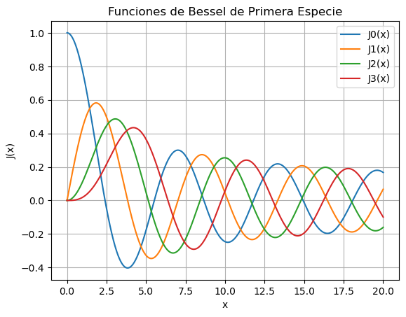
from scipy.special import yn
# Se puede cambiar yn por yv para órdenes fraccionarios
# al importar yv
# Definir valores de x para el gráfico
x = np.linspace(1, 20, 1000)
# Una lista de funciones de Bessel de 2da especie
y = [yn(n, x) for n in range(4)]
# Gráfico
for i, yi in enumerate(y):
plt.plot(x, yi, label='Y{}(x)'.format(i))
plt.xlabel('x')
plt.ylabel('Y(x)')
plt.title('Funciones de Bessel de Segunda Especie')
plt.legend()
plt.grid(True)
plt.show()
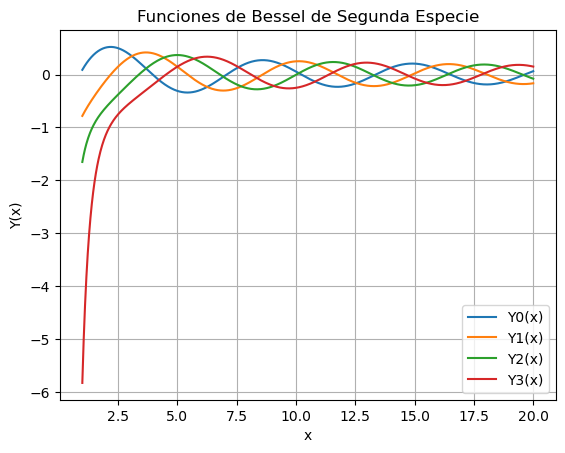
import sympy as sp
def fourier_series(f, p, n_terms=10):
"""
Calcula el desarrollo en serie de Fourier de una función `f(x)` definida en el intervalo ]-p, p[.
Args:
f (sympy expression): La función a desarrollar.
p (float): El intervalo del desarrollo ]-p, p[.
n_terms (int): Número de términos de la serie de Fourier.
Returns:
sympy expression: La serie de Fourier como una expresión simbólica.
"""
# Definir la variable simbólica
x = sp.Symbol('x', real=True)
# Coeficiente a_0
a0 = (1 / (2 * p)) * sp.integrate(f, (x, -p, p))
# Coeficientes a_n y b_n
a_n = lambda n: (1 / p) * sp.integrate(f * sp.cos(n * sp.pi * x / p), (x, -p, p))
b_n = lambda n: (1 / p) * sp.integrate(f * sp.sin(n * sp.pi * x / p), (x, -p, p))
# Construir la serie de Fourier
series = a0 / 2
for n in range(1, n_terms + 1):
series += a_n(n) * sp.cos(n * sp.pi * x / p) + b_n(n) * sp.sin(n * sp.pi * x / p)
# Simplificar la serie
series = sp.simplify(series)
return series
# Definir la función f(x) y el intervalo
x = sp.Symbol('x', real=True)
f = x**2 # Función f(x) a desarrollar
p = sp.pi # Intervalo ]-p, p[
# Llamar a la función para calcular la serie de Fourier
n_terms = 10 # Número de términos de la serie
series = fourier_series(f, p, n_terms)
# Mostrar la serie
display(series)
\[\displaystyle - 4 \cos{\left(x \right)} + \cos{\left(2 x \right)} - \frac{4 \cos{\left(3 x \right)}}{9} + \frac{\cos{\left(4 x \right)}}{4} - \frac{4 \cos{\left(5 x \right)}}{25} + \frac{\cos{\left(6 x \right)}}{9} - \frac{4 \cos{\left(7 x \right)}}{49} + \frac{\cos{\left(8 x \right)}}{16} - \frac{4 \cos{\left(9 x \right)}}{81} + \frac{\cos{\left(10 x \right)}}{25} + \frac{\pi^{2}}{6}\]
import numpy as np
import matplotlib.pyplot as plt
import sympy as sp
def plot_fourier(f, p, n_terms=10, num_points=1000):
"""
Grafica la función original `f(x)` y su desarrollo en serie de Fourier en el intervalo ]-p, p[.
Args:
f (sympy expression): La función a desarrollar.
p (float or sympy expression): El intervalo del desarrollo ]-p, p[.
n_terms (int): Número de términos de la serie de Fourier.
num_points (int): Número de puntos para la gráfica.
"""
# Variables simbólicas
x = sp.Symbol('x', real=True)
# Calcular la serie de Fourier
series = fourier_series(f, p, n_terms)
# Convertir las expresiones simbólicas a funciones numéricas
f_numeric = sp.lambdify(x, f, modules=["numpy"])
series_numeric = sp.lambdify(x, series, modules=["numpy"])
# Convertir p a un número si es simbólico
p_numeric = float(p) if isinstance(p, sp.Basic) else p
# Crear puntos para graficar
x_vals = np.linspace(-p_numeric, p_numeric, num_points)
f_vals = f_numeric(x_vals)
series_vals = series_numeric(x_vals)
# Graficar
plt.figure(figsize=(10, 6))
plt.plot(x_vals, f_vals, label='f(x) (Original)', color='blue')
plt.plot(x_vals, series_vals, label=f'Serie de Fourier (n={n_terms})', color='red', linestyle='--')
plt.title(f'Serie de Fourier de f(x)={f} en ]-{p_numeric}, {p_numeric}[')
plt.xlabel('x')
plt.ylabel('y')
plt.axhline(0, color='black', linewidth=0.8, linestyle='--')
plt.axvline(0, color='black', linewidth=0.8, linestyle='--')
plt.legend()
plt.grid()
plt.show()
# Ejemplo de uso
x = sp.Symbol('x', real=True)
f = x # Función original
p = np.pi # Intervalo ]-p, p[
n_terms = 3 # Número de términos en la serie de Fourier
plot_fourier(f, p, n_terms)
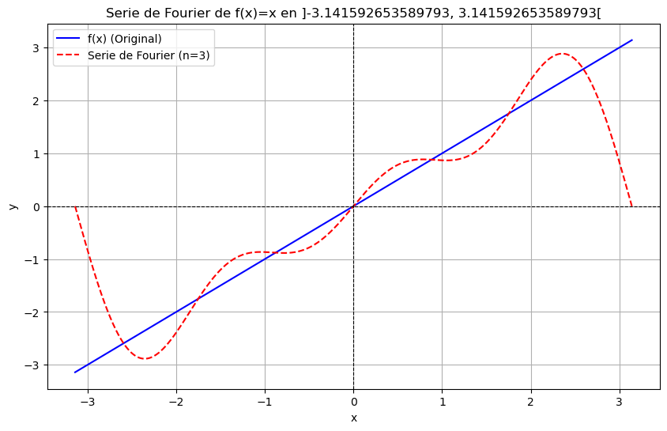
import ipywidgets as widgets
widgets.IntSlider()
from IPython.display import display
w = widgets.IntSlider()
display(w)
%matplotlib inline
from ipywidgets import interactive
import matplotlib.pyplot as plt
import numpy as np
import plotly.io as pio
pio.renderers.default = 'iframe'
def f(m, b):
plt.figure(2)
x = np.linspace(-10, 10, num=1000)
plt.plot(x, m * x + b)
plt.ylim(-5, 5)
plt.show()
interactive_plot = interactive(f, m=(-2.0, 2.0), b=(-3, 3, 0.5))
output = interactive_plot.children[-1]
output.layout.height = '350px'
interactive_plot
import plotly.graph_objects as go
fig = go.Figure(data=go.Bar(y=[2, 3, 1]))
fig.show()